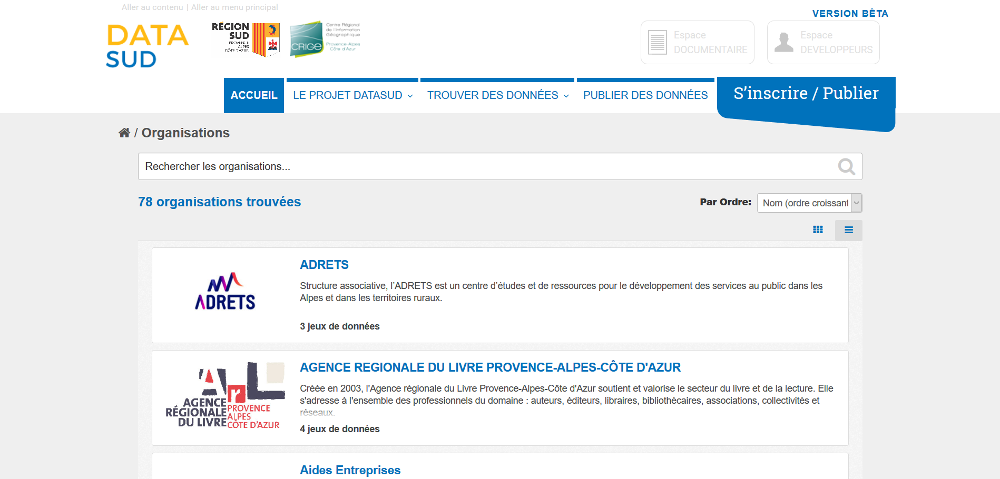

DATADAYS#3
Atelier de publication pour DATASUD

Proposé par le CRIGE Provence-Alpes-Côte d'Azur le 28 mars 2019 Disponible sur le git du CRIGE
Rappel du projet
DATASUD est un projet piloté par le CRIGE Provence-Alpes-Côte d’Azur et la Région SUD Provence Alpes-Côte d’Azur, avec la participation financière de l’État et du Conseil départemental des Hautes-Alpes.
Le projet mutualise une infrastructure de données à l’échelle régionale, rendues visibles à travers un catalogue de données à l'échelon régional.
Le catalogue de données diffuse des données ouvertes, géographiques et intelligentes au service du développement des territoires et de l’innovation numérique
73 organisations diffusent déjà des données sur DATASUD. De nouvelles fonctionnalités et des données supplémentaires vont être intégrées au fil de l'eau 2019.
Partenariat CRIGE Provence-Alpes-Côte d'Azur et Région SUD
| Groupement de commande | CRIGE/Région SUD |
| Forme du Marché | Accord-cadre monoattributaire |
| Financement | 50% CRIGE, 50% Région SUD |
| Durée | Fin 2016 à fin 2019 |
Prestataire :
Sous-traitants
Le code est entièrement open-source !
Roadmap

À qui s'adresse DATASUD ?
Aux producteurs de données en région, pour référencer et diffuser leur patrimoine de données
Aux réutilisateurs de données pour développer, aménager, protéger le territoire
Aux entreprises et start-up à la recherche de données
Aux citoyens et aux acteurs de la transparence démocratique
Pourquoi publier sur DATASUD ?
Participer à une initiative régionale, "point d'entrée unique" de la donnée en région
Mutualiser une infrastructure pour diminuer les coûts de diffusion de l'information
Publier des données dans des formats ouverts et réutilisables
Souscrire aux exigences règlementaires (Loi République Numérique, INSPIRE)
Faire remonter les données au niveau national : data.gouv.fr, geo.data.gouv.fr, geocatalogue.fr,...
Que publier sur DATASUD ?
Les données produites par votre organisation et diffusables (90% des données d'administration publique)
Des données ouvertes (Open Data) mais pas seulement (données sensibles)
Des données au format ouvert : CSV, JSON, GEOJSON, SHP, JPEG2000, GeoTIFF
Qui publie ou publiera sur DATASUD ?
Et demain, par moissonnage, la DREAL PACA (GEOIDE), la Métropole AMP, le SMAVD
Tour de table des données des participants
Publier en PRODUCTION ou en RECETTE?
Publier sur la PRODUCTION
Quand vous voulez créer une organisation, publier un jeu de données consolidées, diffuser directement au plus grand nombre

Publier sur la RECETTE
Quand vous voulez tester l'infrastructure, publier des données en brouillon, tester les services associés
S'INSCRIRE
CREER UNE ORGANISATION
Au moment de l'inscription ou dans l'Espace Utilisateur, onglet "Organisations"
EDITER UNE ORGANISATION
Dans l'Espace Utilisateur, onglet "Organisation", "Editer une organisation"
Attention, il faut être REFERENT pour éditer une organisation
CREER UN TERRITOIRE DE COMPETENCES
Le territoire de compétences permet :
- d'améliorer la recherche spatiale des utilisateurs (référencement)
- [CRIGE] limiter l'extraction d'une donnée sur un territoire de compétences
- [CRIGE] d'autoriser le téléchargement de données sensibles (MAJIC III)

PUBLIER UN JEU DE DONNEES
Au minimum 2 étapes :
- Publier une fiche de métadonnées (dataset)
- Publier la donnée (ressource)
- (optionnel) Publier une métadonnée INSPIRE
Comment rédiger une fiche de métadonnées dans DATASUD ?
https://datasud.readthedocs.io/fr/latest/contributeurs.html#publier-un-jeu-de-donneesComment publier une donnée dans DATASUD ?
https://datasud.readthedocs.io/fr/latest/contributeurs.html#etape-n2-publier-une-ressourceQu'est-ce qu'on ne publie pas ?
(ce qu'on ne considére pas comme donnée brute)
- Des jeux de données contenant uniquement des fichiers sous la forme de fichiers PDF, Word,...qui constituent certes une information mais pas une donnée facilement réutilisable
- Exemple : on ne publie le PDF d'une délibération...par contre, on peut publier la liste des délibérations en fichier CSV avec un lien de téléchargement
- Des liens vers page web qui ne contiennent pas de données brutes
Plus de règles éditoriales ici
VERIFIER SES PUBLICATIONS
- Retourner sur votre fiche de métadonnées
- Télécharger votre jeu de données
- Prévisualiser votre jeu de données
Vous pouvez aussi exporter votre catalogue de donnés en CSV
ainsi que tous vos résultats de recherche de données

UTILISER LES FLUX OGC DATASUD
La logique de DATASUD = un service OGC par ORGANISATION. Exemple : une URL pour l'ARPE, une URL pour SUD THD, etc.
Les URLs se trouvent dans l'Espace Utilisateur, onglet "Organisation", sur la description de chaque Organisation
ET POUR INSPIRE ?
Rendez-vous dans l'Espace Utilisateur, sélectionnez un dataset, éditez-le et sélectionnez l'option "Editer une métadonnée INSPIRE"
POUR LES PARTENAIRES DU CRIGE
Services à valeur ajoutée supplémentaire sur l'infrastructure :
- Support de premier niveau auprès des utilisateurs : hotline, support technique, assistance
- Extracteur de données géographiques raster, vecteur
- Accès aux données sensibles sous convention régionale
- Gestionnaire de style
- (à venir) Visualisation de données et utilitaire de publication de cartes
SERVICES CRIGE - EXTRACTEUR
SERVICES CRIGE - GESTIONNAIRE DE STYLE
AVOIR SON CATALOGUE EN MARQUE BLANCHE
Exemples :
- sur le portail du PNR Provence-Alpes-Côte d’Azur : http://geo.pnrpaca.org/geoservices/catalogue-de-donnees/
- sur une page html simple, CRIGE : http://beta.crige-paca.org/beta/widget/crige/crige.html
- Département des Hautes-Alpes : http://beta.crige-paca.org/beta/widget/hautes_alpes/index.html
- Métropole AMP : http://beta.crige-paca.org/beta/widget/mamp/index.html
DATASUD et portail CRIGE
Comment s'articule les deux outils ?
Le portail CRIGE est le volet "animation" du réseau géomatique régionale et DATASUD est son volet "Guichet" de données. Les deux sont des outils qui reposent sur la même infrastructure de données.
DATASUD, la communauté
Prochains événements
- Club Utilisateurs #2, le 4 avril de 10h à 12h30, au Conseil Régional à Marseille
Faire partie de la communauté DATASUD ? (1)
Consultez le portail du CRIGE, vous pourrez vous inscrire aux différents évènements (ateliers,barcamp, comité technique) !
Faire partie de la communauté DATASUD ? (2)
- Suivez-nous sur Twitter @CRIGEPACA (actualité de la plateforme, annonce des nouveaux jeux de données)
Contactez l'équipe
- L’équipe CRIGE de la plateforme DATASUD est joignable par téléphone : 04 42 90 71 22
- Elle répond à vos questions par email : admin.datasud@crige-paca.org
- Pour toute question de support technique sur la donnée géolocalisée : support@crige-paca.org
- Sinon, une adresse générique de contact de DATASUD est disponible pour le CRIGE et la Région SUD : contact@datasud.fr